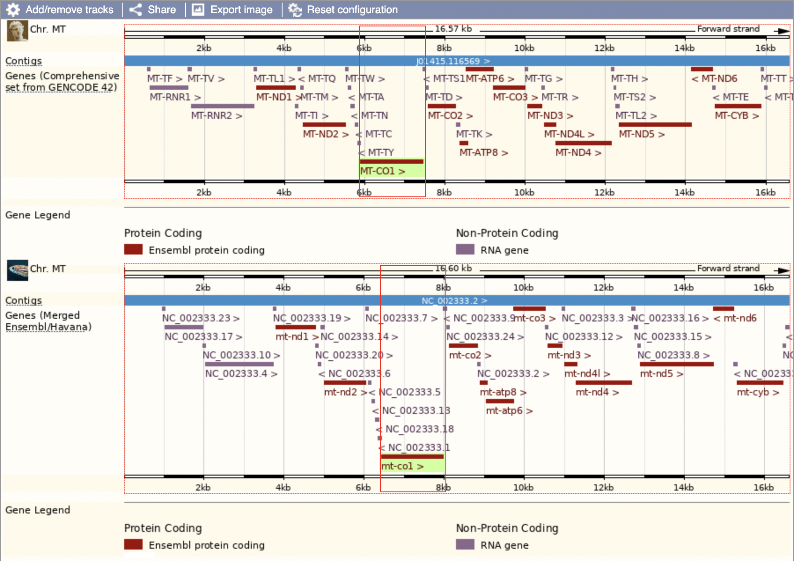
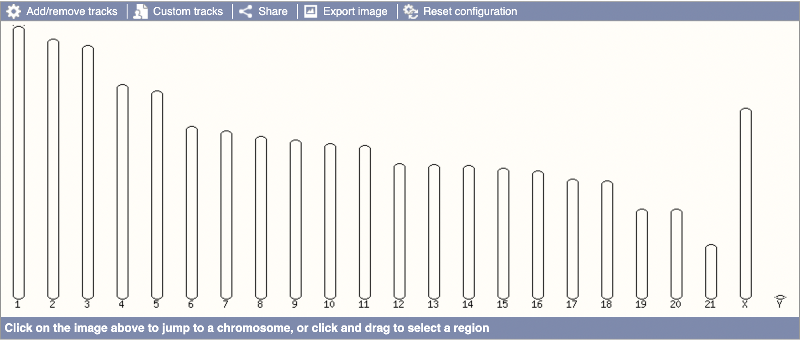
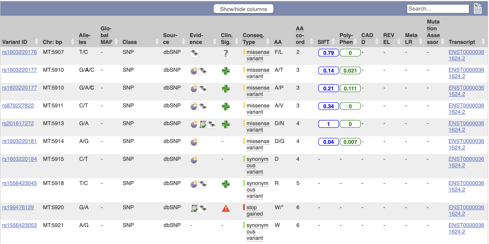
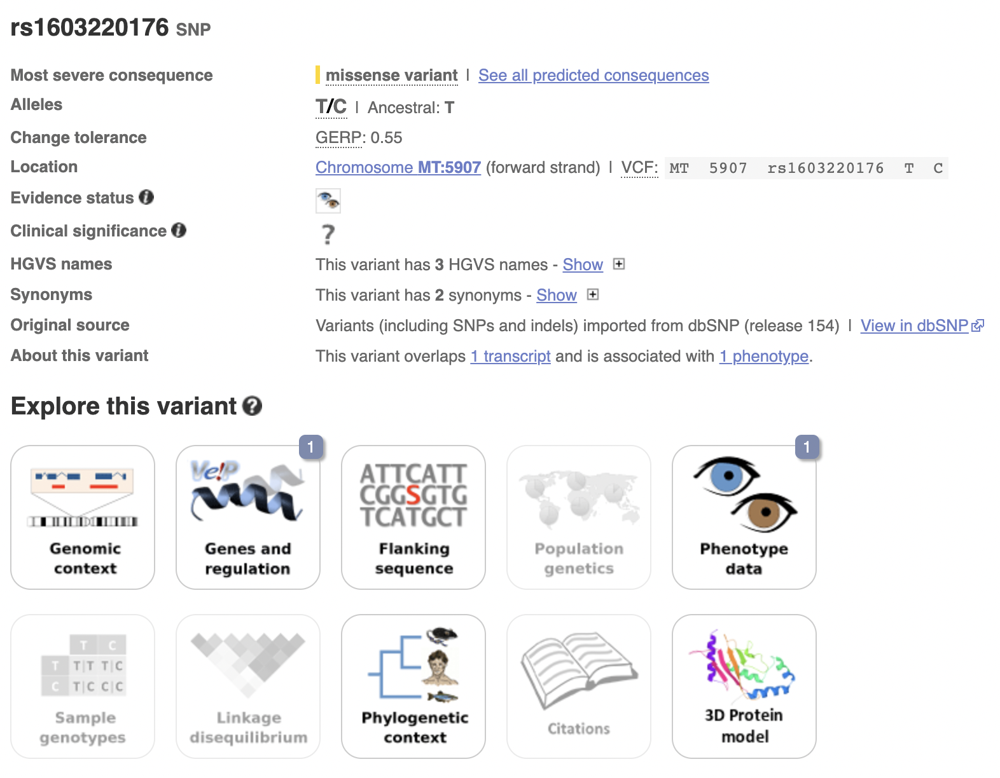
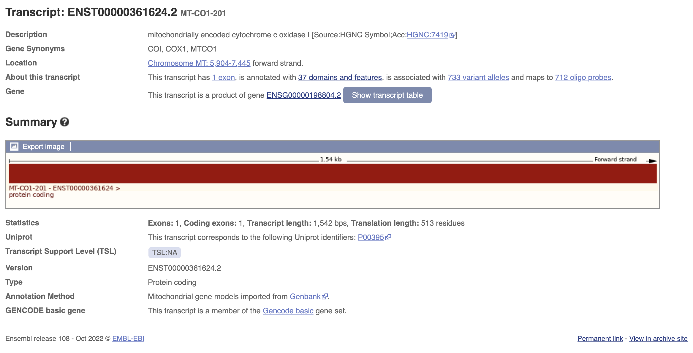
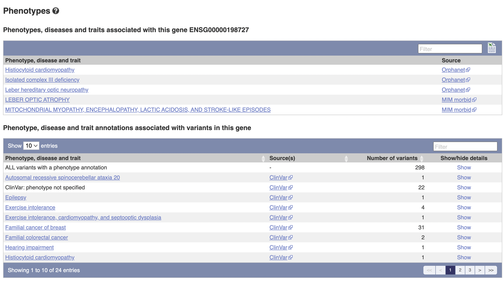
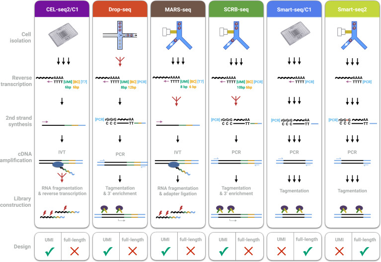
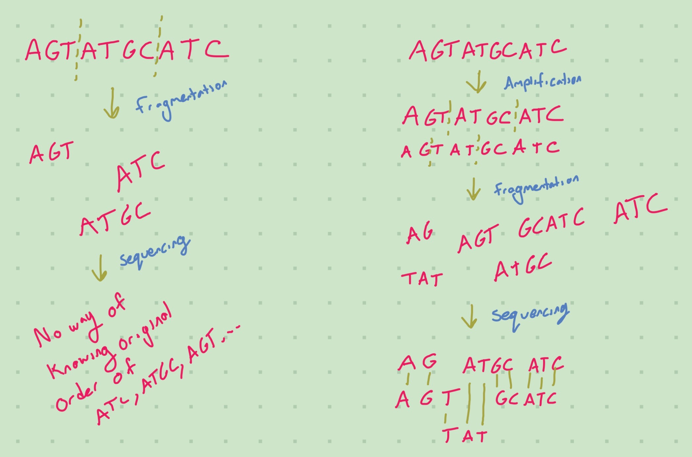

Overview of scRNA-seq Data Creation – Sequencing Protocol
I’ve seen a few “protocols” pop up, such as Smart-seq2 and 10x Chromium. This blog aims to answer the following questions:
- What are protocols
- What affect do they have on downstream analysis
- Which are the common protocols
I am indebted to Ziegenhain et al. (2017) for much of my understanding.
What is a protocol?
An algorithm for biologicians; it’s a recorded sequence of steps to follow in the lab to produce scRNA-seq data.
Details about protocols
One type of technical variable is the sensitivity of a scRNA-seq method (i.e., the probability to capture and convert a particular mRNA transcript present in a single cell into a cDNA molecule present in the library). Another variable of interest is the accuracy (i.e., how well the read quantification corresponds to the actual concentration of mRNAs), and a third type is the precision with which this amplification occurs (i.e., the technical variation of the quantification). The combination of sensitivity, precision, and number of cells analyzed determines the power to detect relative differences in expression levels.
– Ziegenhain et al. (2017)
The difference between sensitivity and accuracy is a bit confusing. I think that sensitivity here is on a per-trascript level (how likely it is to be captured) whereas the accuracy is about the relative proportions of the transcripts. If you had 5 instances of mt-co1 and 10 instances of mt-cyb in your results but had 10 mt-co1/20 mt-cyb in reality, the precision would be 50% but the accuracy would be 100%. I’m not sure what they mean by precision, but I feel confident in assuming it’s the probability that a reported transcript was actually present in the sample.
Sidequest: What is mt-co1?
I’ve been trying to “think more like a bioinformatician”. Now, I don’t really think that bioinformatician spend much time learning about random genes, but I think the tools I have to use to learn about them will be tools that bioinformaticians use and hence learning about random genes will still be useful for me. mt-co1 is a random gene, which is why I picked it out here. I specifically picked it because it’s present in zebrafish (Danio rerio), which is what I was reading about a lot lately. However, it is also present in humans and mice. In fact it’s probably present in a lot of places, this was just what came up on the first page of my Ensembl search.
- For zebrafish, the Ensembl ID is ENSDARG00000063905
- For humans, the Ensembl ID is ENSG00000198804
- For mice, the Ensembl ID is ENSMUSG00000064351
In general it has quite a lot of orthologs (genes in similar species sharing a common ancestor). However, there are also quite a lot of species (98) for which Ensembl reports no orthologs, such as Balaenoptera musculus, the blue whale. Unfortunately, it’s not clear to me whether Ensembl reports no orthologs because it is confident none exist, or because it does not have the data; there are 314 species in Ensembl as far as I can tell, 200 of which have orthologs and 98 of which don’t. Presumably the remaining 16 are unsure? But it’d be weird that such a high percentage of species, spread out over many domains in the tree of life, lack a mitochondrial gene that is very widespread. I’m not sure.

We can see that this region seems to be highly conserved between species; all the protein-coding genes are in the same order along the chromosome. Zebrafish and humans are just about as far away as you can get among vertebrates so if it’s conserved amongst them, we’d expect it to be conserved amongst much closer relatives as well.

The above graphic indicates that Ensembl does not have the mitochondrial DNA for the blue whale (or else we’d expect an “MT” chromosome like in humans). This seals the deal for me that a lack of orthologs in Ensembl does not denote confidence in a lack of orthologs irl, merely that no orthologs have been found.
Despite my current fascination with zebrafish, I’ll mostly talk about its role in humans (but again, it’s probably quite similar).
To continue, mt-co1 stands for “mitochondrially encoded cytochrome c oxidase I”.

The above table is quite interesting; it’s a list of known variants to the gene that have occured. I’ll go through column-by-column to explain what they are.
- Variant ID: The unique identifier of this gene variant.
- Chr: bp: The location, in terms of base pairs, along the chromosome.
- Alleles: The base pair before the slash is the default, the ones after the slash are possible mutations.
- Global MAF: “The frequency of the second most common allele in the global population, defined in human by the 1000 Genomes Project phase 3.
- Class: The type of variant it is (SNP or SNV for example)
- Source: The database this is from
- Evidence: Evidence for the existence of this variant
- Clinical Significance: Clinical significance
- Consequence Type: What will happen when the cell/mitochondria try to transcribe this DNA? How will it affect the mRNA and the protein?
- AA: The resulting amino acid (before the slash is original, after is the variant - it’s possible for synonymous variants to exist in which case there’s no slash).
- AA coord: Not sure, but I think this is its location in the chain of amino acids in the generated protein.
- SIFT: Score of likelihood for whether we predict the function of the generated protein to change.
- Poly-Phen: (I think “phen” is “phenotype”, as in “multiple phenotypes”). Another score of likelihood of predicted function change, calculated by looking at different characteristics.
- CADD: Scores the “deleteriousness” of SNPs
- REVEL: Predicts “pathogeneity” of of SNVs
- Meta LR: Same as above
- Mutation Assessor: Similar to SIFT and Poly-Phen. For SNVs.
- Transcript: How the gene manifests in RNA


The stuff about clinical significance might be quite useful to look at for future projects.
We could look into ontology terms and pathways as well, but I’ve spent quite a long time on this sidequest.
Sidequest: What is mt-cyb?
mt-cyb, or ENSG00000198727, or even “mitochondrially encoded cytochrome b”, is another mitochondrial gene. It is involved in “respiratory electron transport”, metabolism, and the citric acid cycle, but has no more known pathways in Ensembl. All of the aforementioned pathways were also shared by mt-co1, but mt-co1 had much more pathways overall.


There’s a lot to unpack in this image. I’ll only pick out a few.
Reverse Transcription
The creation of cDNA from RNA (called so because DNA->RNA is transcription). cDNA is more stable than RNA, so it’s easier to work with.
2nd Strand Synthesis
The synthesis of the second strand of cDNA or RNA (😉). (Since reverse transcription is just creating one strand of cDNA)
Amplification
Because of limited read length, fragmentation is required (see the section on it for details). However, it can be hard to reconstruct the original transcript with confidence. If we amplify the RNA/cDNA first then after fragmentation this problem will be mitigated. Amplification is just the process of creating many copies of RNA/cDNA already extant in your sample.

Fun fact: you don’t need amplification when using nanopores.
The facility of nanopore technology to analyse native DNA, without the requirement for amplification, eliminates PCR bias and allows the identification of base modifications alongside nucleotide sequence — with no requirement for time-consuming, harsh, and, often inefficient, chemical conversion (e.g. bisulfite conversion).
– Oxford Nanopore, about their products
PCR
PCR stands for Polymerase Chain Reaction.
Sometimes called “molecular photocopying,” the polymerase chain reaction (PCR) is a fast and inexpensive technique used to “amplify” - copy - small segments of DNA.
– “Polymerase Chain Reaction Fact Sheet” (2020)
In the PCR method, a pair of primers hybridizes with the sample DNA and defines the region that will be amplified, resulting in millions and millions of copies in a very short timeframe.
– Shchelochkov (2023)
IVT
IVT stands for In Vitro Transcription, and is a method of amplification by making the previously produced cDNA molecules be transcribed into RNA. Note that this is why CEL-seq2/C1 and MARS-seq in the diagram above go from RNA to cDNA and then back to RNA (because they both use IVT.
In vitro transcription is a simple procedure that allows for template-directed synthesis of RNA molecules of any sequence from short oligonucleotides to those of several kilobases in μg to mg quantities. It is based on the engineering of a template that includes a bacteriophage promoter sequence (e.g. from the T7 coliphage) upstream of the sequence of interest followed by transcription using the corresponding RNA polymerase.
– Beckert and Masquida (2011)
RNA fragmentation
After poly(A) + selection or rRNA depletion, RNA samples are typically subject to RNA fragmentation to a certain size range before RT. This is necessary because of the size limitation of most current sequencing platforms, e.g., <600 bp on Illumina sequencers.
– Fragmentation Subsection; General Aspects OF RNA-Seq Section; Hrdlickova, Toloue, and Tian (2017)
Fragmentation is done when there is a limited read length in your flow cell. If we did not fragment the RNA, then we would need large read length to read the base pairs in the middle of a long RNA strand. Fragmentation is not necessary if your read length is longer than the largest RNA molecule (or unlimited). Fragmentation puts extra strain on downstream analysis, because we need to reconstruct the original sequence from the fragments. Furthermore, fragmentation isn’t random; the techniques used to break up the RNA may preferentially cause breaks in some places compared to others. Hrdlickova, Toloue, and Tian (2017) talk about about the biases for different fragmentation methods.
Fragmentation can also be used on the cDNA, but it can be harder to automate. However, tagmentation is done on cDNA.
Tagmentation
Recent development in using transposon-based, so-called tagmentation method has made it simple to fragment cDNA and add adapter sequences at the same time. In this method, an active variant of the Tn5 transposase mediates the fragmentation of double-stranded DNA and ligates adapter oligonucleotides at both ends in a quick reaction (~5 min). However, it is notable that Tn5 and other enzyme-based cDNA fragmentation methods require a precise enzyme:DNA ratio, making method optimization less straightforward than RNA fragmentation. Consequently, fragmenting RNA is currently still the most frequently used approach in RNA-Seq library preparation.
– Fragmentation Subsection; General Aspects OF RNA-Seq Section; Hrdlickova, Toloue, and Tian (2017)
Ligation is the joining of two nucleic acid fragments through the action of an enzyme - at least, according to Wikipedia. It seems that this is just the combination of fragmentation and tagging with the adapter oligonucleotides. These processes used to need to be done sequentially.
Why do we want to tag the adapter with oligonucleotides?
The tags are necessary to attach primers to your cDNA (Salamat 2018). This is described well during the following explanation of Index PCR:
A single Illumina flow cell can sequence multiple samples as long as the expected reads will not saturate (exceed) the capacity of the flow cell. However, since the samples are pooled and loaded as one into the flow cell, there must be a mechanism to which to distinguish sequences from one sample to another. This is accomplished via a process called Index PCR. Here, custom oligonucleotides called index primers are used to amplify and ‘barcode’ the fragments. Each index primer contains the following: * Read (1 or 2) sequencing primer: a segment complementary to the ‘tag’ introduced during tagmentation, * Indexing sequence: a unique DNA sequence for identification / barcoding of samples * Sequencing Anchor (P5/P7): sequences complementary to the oligos in the flow cell. These allow the index PCR products (libraries) to bind to the Illumina flow cell for sequencing.
STEP 4: LIBRARY PREPARATION: AMPLIFICATION; Salamat (2018)
For an explanation on all the details here, see the section on Index PCR; essentially, the tags are necessary to hook an index primer into your cDNA, which is then necessary to hook it up with the oligos in your flow cell.
Primers
A primer, as related to genomics, is a short single-stranded DNA fragment used in certain laboratory techniques, such as the polymerase chain reaction (PCR). In the PCR method, a pair of primers hybridizes with the sample DNA and defines the region that will be amplified, resulting in millions and millions of copies in a very short timeframe. Primers are also used in DNA sequencing and other experimental processes.
– Shchelochkov (2023)
Primers are used to attach to the R/DNA in as a marker for amplification.
3’ Enrichment
Enrichment is the process of increasing the proportion of the thingamajig of interest (RNA/cDNA in this case) relative to the rest of stuff in the sample. It differs from amplification in that it’s not increasing the thingamajig of interest but rather getting rid of the thingamajigs of disinterest. (So it’s more like depoorment). 3’ enrichment specifically utilizes the 3’ end of the RNA/cDNA to do the enrichment.
Adapter Ligation
In a standard RNA-Seq library protocol, cDNAs of a desired size generated from RT of fragmented RNAs with random hexamer primers or from fragmented full-length cDNAs are ligated to DNA adapters before amplification and sequencing. While simple, this approach loses the information about which DNA strand corresponds to the sense strand of RNA. Lack of strand specificity would make it difficult to identify antisense and novel RNA species and cause inaccurate measurement of sense RNA expression. Several methods have been developed to capture the directionality of RNA in cDNA libraries.
– Adapters and Directionality Subsection; General Aspects OF RNA-Seq Section; Hrdlickova, Toloue, and Tian (2017)
RT stands for Reverse Transcription, described earlier. Antisense RNA is RNA that is complementary to mRNA. Adapters are useful for sequencing as they allow the transcripts to bind to the oligos in SBS flow cells.
UMI vs Full Length
UMI is an acronym for Unique Molecular Identifier. UMIs are complex indices added to sequencing libraries before any PCR amplification steps, enabling the accurate bioinformatic identification of PCR duplicates. UMIs are also known as “Molecular Barcodes” or “Random Barcodes”
– Tech (n.d.)
UMIs are applied to individual strands of cDNA - i.e they are not applied to identify cells (barcoding) or samples (Unique Dual Indices (UDIs)), but individual transcripts of the original RNA. This can help accurately piece reads together when sequencing. The UMI will only be on one end of the strand and hence many reads will not contain the UMI on them, but when piecing them together post-fragmentation it can provide more information on what can be matched with what.
The main disadvantage of both Smart-seq protocols is that the generation of full-length cDNA libraries precludes an early barcoding step and the incorporation of UMIs.
– Fragmentation Subsection; General Aspects OF RNA-Seq Section; Hrdlickova, Toloue, and Tian (2017)
Other protocols have sacrificed full-length coverage in order to sequence part of the primer used for cDNA generation. This enables early barcoding of libraries (i.e., the incorporation of cell-specific barcodes), allowing for multiplexing the cDNA amplification and thereby increasing the throughput of scRNA-seq library generation by one to three orders of magnitude
– Introduction Section; Hrdlickova, Toloue, and Tian (2017)
Not all methods give full coverage of the transcripts; when they do, it is called full length.